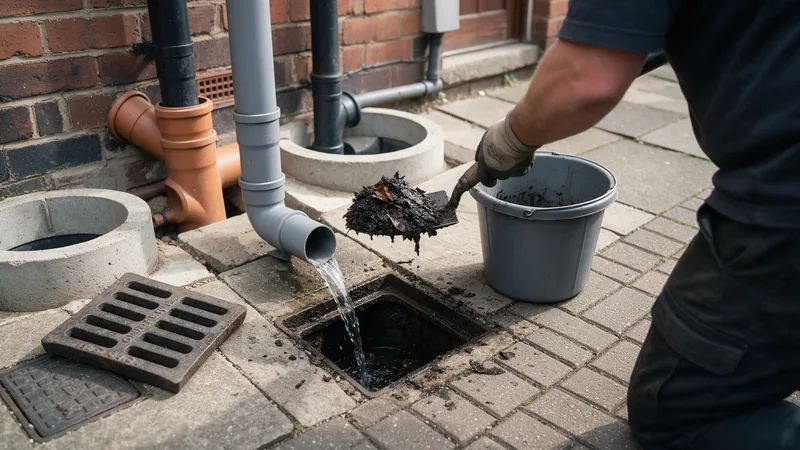

What a gully actually is
The thing with the grating at the bottom of a downpipe or outside a kitchen window is a gully. Under the grating is a pot, which holds a little water so smells cannot come back up, and an outlet at the side that takes the water away. It is designed to catch grit and leaves so they do not go into the drain.
Which means it is designed to fill up. Nobody tells you that when you buy the house.
What happens when it fills
The pot silts up with grit, leaf mulch and, outside a kitchen, cold fat. When the silt rises above the outlet, water stops going away. A downpipe then backs up and spills down the wall instead, which over a winter is how you get a damp patch inside, moss up the brickwork and pointing that starts to go.
It is one of the cheapest things on a house to put right and one of the most commonly ignored.
How we clear it
Grating off, the silt out by hand into a bucket rather than pushed down the outlet where it becomes the next blockage, then the pot and the outlet flushed through. Then we tip a bucket of water in and watch. If it takes it without rising, it is clear. If it rises, the blockage is past the gully and down the run, and we carry on from there.
Gutters
We clear gutters where we can reach them safely from the ground or a short ladder, usually as part of the same visit, because a blocked gutter and a blocked gully are usually the same afternoon's work. Anything high, anything over a conservatory or anything needing a tower, and you want a roofline firm with the proper access rather than us on a borrowed ladder.

Generated photoGenerated for this demo. Not a photograph of a real job.
On the day
How this one usually goes.
- Grating off and have a lookHow high the silt is, whether the outlet is under it, and whether the water in the pot is sitting still or moving.
- Silt out by hand into a bucketNot pushed down the outlet, which is how a gully clear becomes a drain blockage next week.
- Flush the pot and the outletWater through until it runs clean, so the trap seals properly again and the smell goes.
- Test it with a bucket of waterTip it in and watch. Takes it level, it is clear. Rises, and the blockage is further down the run.
- Grating back and the area washed offGrating down flat so it does not rock underfoot, and the flags hosed clean.
A sample running order for this demo. Yours depends on what is under the covers.
Questions
Asked about this job.
Why does my downpipe run down the wall in heavy rain?
Nearly always the gully at the bottom, not the downpipe or the gutter. The gully has silted up above its outlet, so water arrives faster than it can go away and overflows at the top.
It is the cheapest thing on the list to fix and the one that quietly does the most damage, because a wall that gets soaked every winter is how pointing and plaster go.
There is a drain smell outside the back door. What is it?
A gully whose pot has dried out or silted up, usually. That little bit of standing water in the pot is a seal, and when it is not there, air comes back up the drain instead.
Inside the house, the same thing happens with a trap under a basin or a shower nobody uses. Run the water in it for a minute and see if the smell goes.
How often should a gully be cleared?
Depends entirely on what is above it. Under a tree, every autumn. Outside a kitchen window where the sink waste goes in, more often than people think, because of the fat.
A gully on a bare wall with nothing overhanging might go years. The honest answer is to lift the grating once a year and look, which costs nothing.
Can I just do it myself?
A lot of people do, and there is no reason not to if you can get at it. Gloves, a trowel, a bucket, and take the silt out rather than pushing it down the outlet.
Ring us when the water still will not go away after you have cleared the pot, because at that point the problem is past the gully and down the run, and that needs rods.
General trade knowledge written for this demo, not advice on your drain.
Our work
Sample jobs like this.
 Generated photoGully full to the rimPrescot · sample
Generated photoGully full to the rimPrescot · sampleMade up samples with generated pictures. Tap one for the detail.
Also
The other things we do.
Blocked drains and toilets
Rodded, jetted and running again, then a look down it to see what caused it. Most of what we pull out is wipes, fat or roots.
More →Drain camera surveys
A camera down the run so you can see the inside of the pipe instead of guessing. Footage and a plain written report after.
More →Drain repairs and relining
Cracks, open joints and roots put right from inside the pipe where we can, with a patch or a liner cured in place.
More →Soakaways and land drainage
Rainwater taken away from the house and the lawn. We test what the ground actually does before anybody prices the dig.
More →Septic tank and cesspit help
The drainage side of it: the runs in and out, the chambers and the condition of the pipework. Emptying is a tanker job.
More →Shall we come and look?
Tell us what it is doing and your postcode and we will book someone in. If waste water is coming up now, use the urgent line instead.